03 Morphology and Word-Formation
Theory
Lexical innovation
Types of neologisms (Kerremans 2015):

Morphology vs word-formation
Based on Schmid (2016):

Inflection in Present-Day English
Which inflectional morphemes exist? (Schmid 2016)
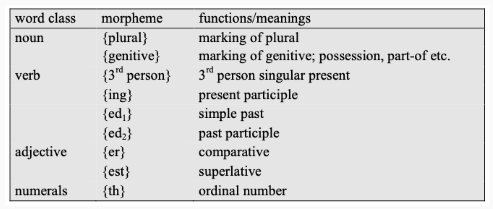
{play} + {plural}, {house} + {plural}
Morphological building blocks
(Schmid 2016)
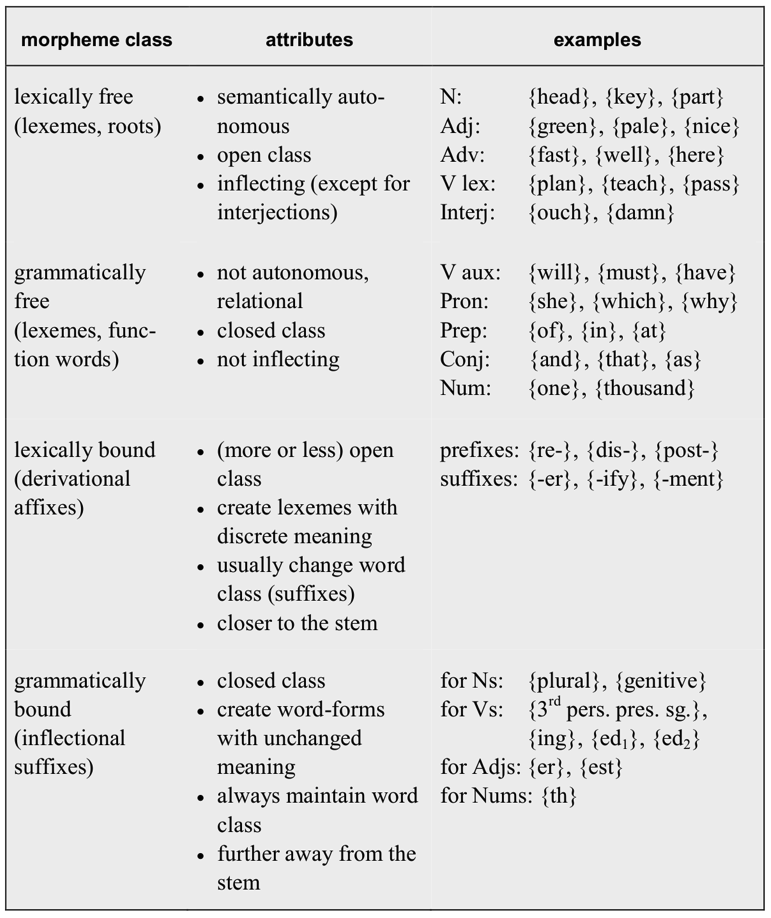
full(adj) → fully(adv) → {ly}(lx.bd)
hard → hardly
Morphemic word-formation processes
Overview:
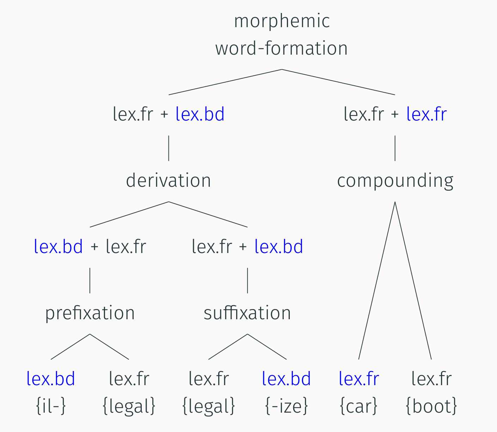
Examples: legal → legalize; clean(adj) → clean(v)
Types of compounds:
– endocentric: washing machine
– exocentric: redneck, paperback
– copulative: singer-songwriter, blue-green
Non-morphemic word-formation
Overview
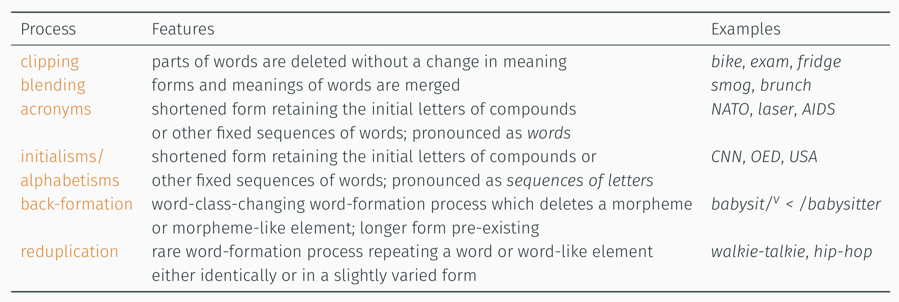
Zero-derivation / conversion vs derivation
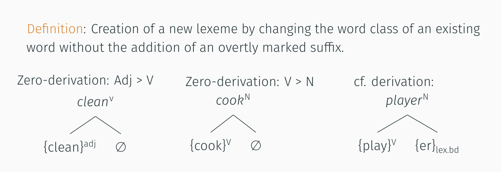
cook(v) → cook(n)
Compounding vs blending
Compounding schema:
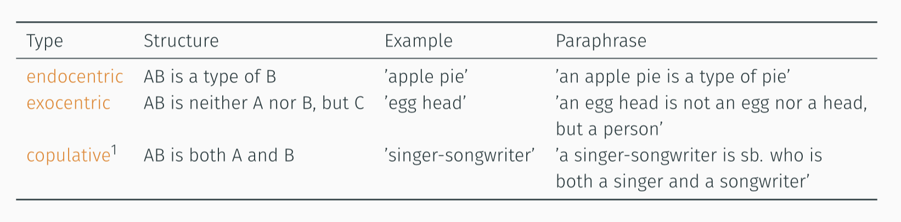
Blending examples (Kemmer 2003):
swooshtika – derogatory reference to Nike logo
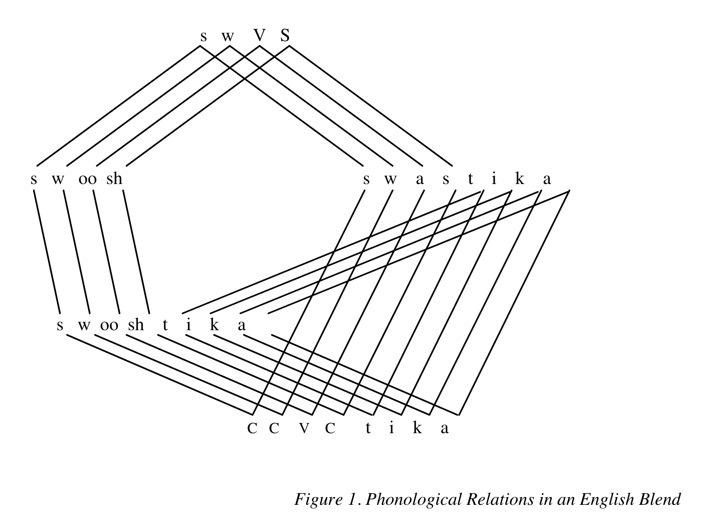
glitterati
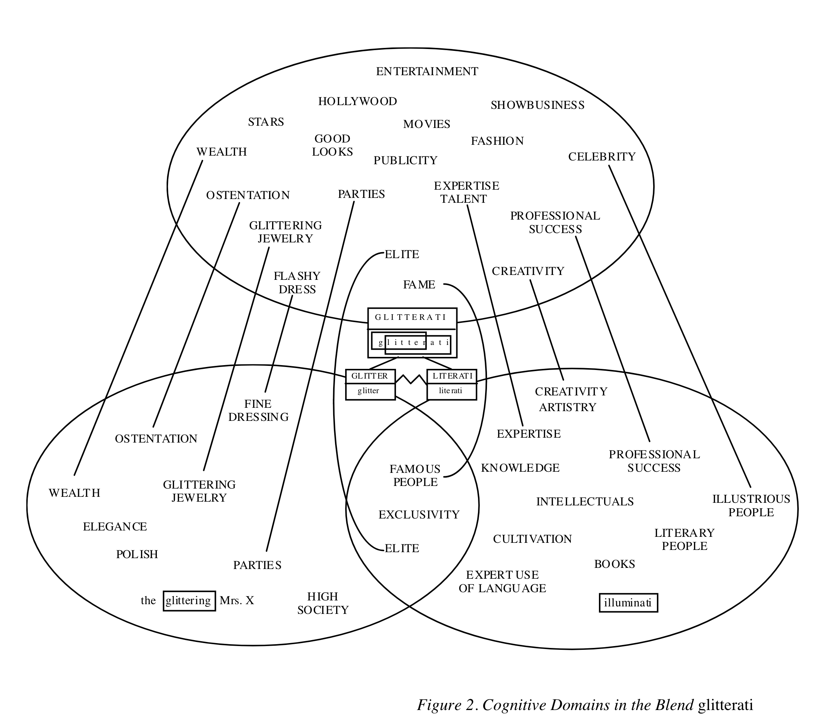
Morphemic vs non-morphemic WF – summary
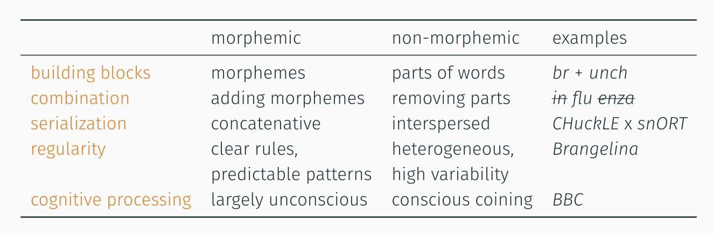
Further reading
- Bauer 2022. An Introduction to English Lexicology.
- Lipka 2002. English Lexicology.
- Schmid 2016. English Morphology and Word-Formation – An Introduction.
Practice
Morphological analysis
Analyse the following words morphologically:
- distasteful
- fridge
- washing machine
- sightsee(^v)
- friendship
- Brangelina
- lol
Studying word-formation in the OED
Shortening: Which semantic domains are most common among shortenings?
OED Advanced search:
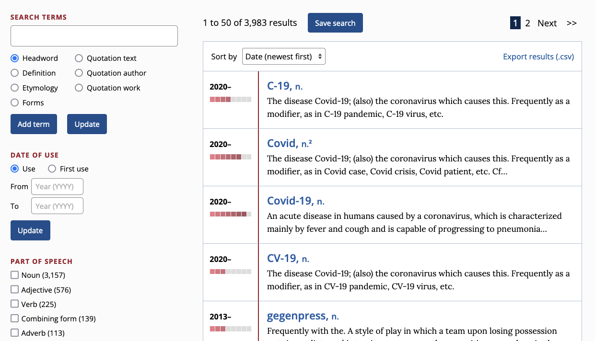
Use Microsoft Excel to create a table and pivot chart:
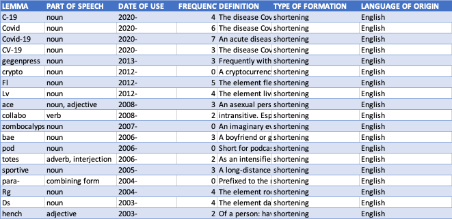
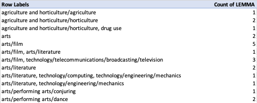
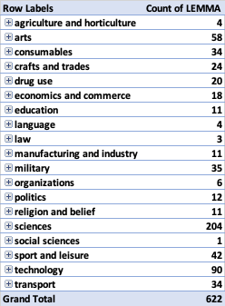

Further study: compare these findings with compounding.